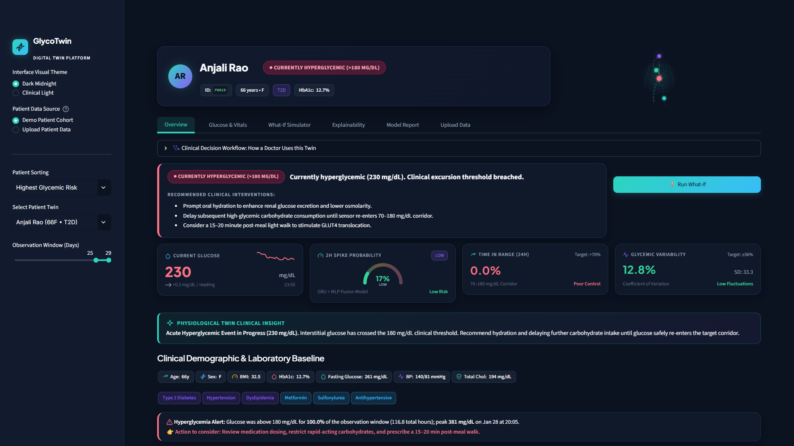
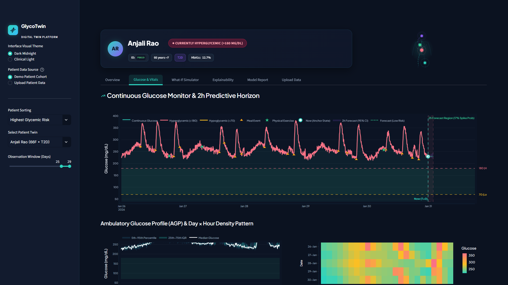
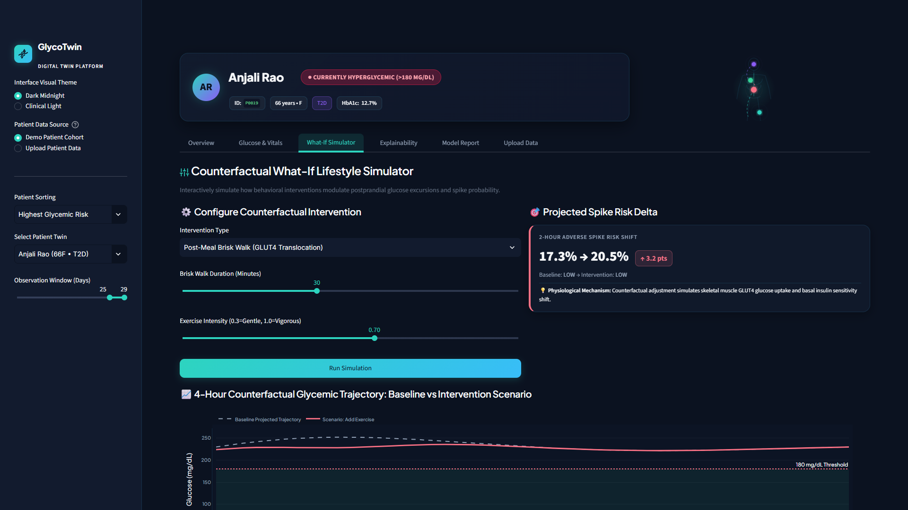
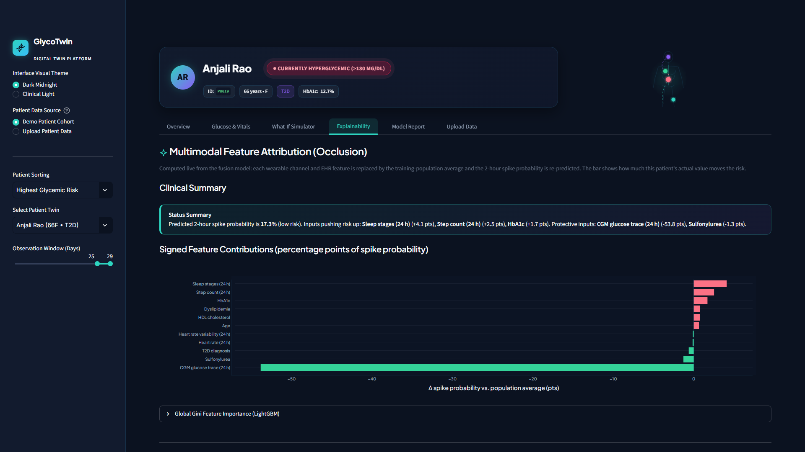
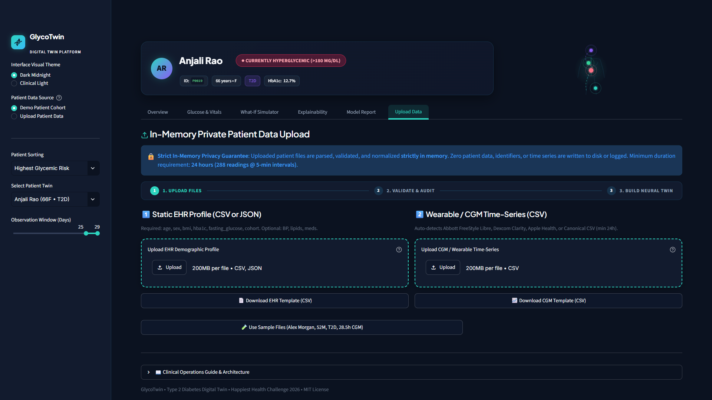
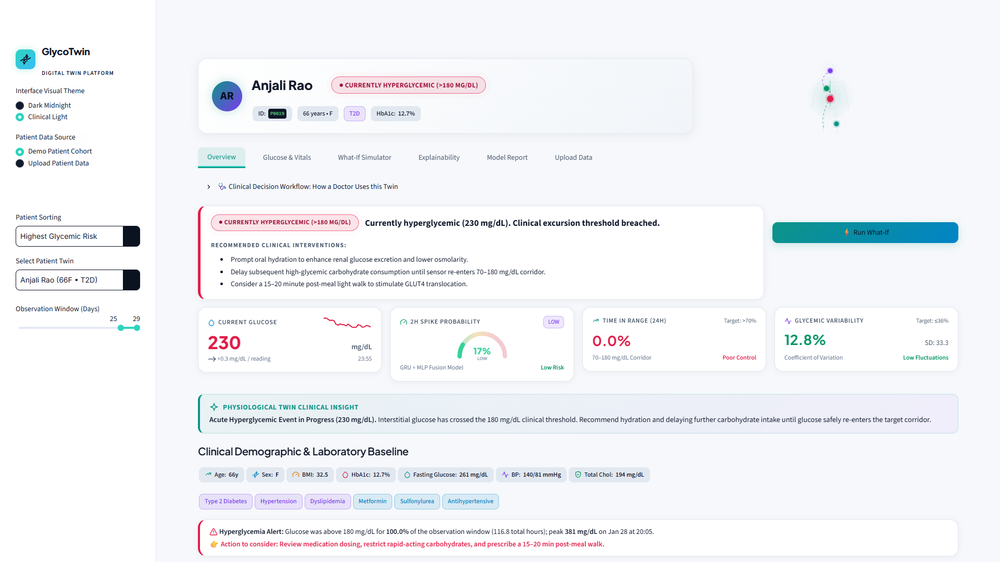

Lancet Diabetes & Endocrinology (2023) established that 101.3M adults live with diabetes in India, alongside 136 million individuals with prediabetes at imminent risk of metabolic decompensation.
1 in 10 adults globally suffer from diabetes. Over 90% of cases are Type 2 Diabetes, where glycemic variability drives microvascular retinopathy and macrovascular cardiovascular disease.
Forecasts impending glycemic excursions (>180 mg/dL) with a full 2-hour clinical buffer, granting ample time for behavioral or therapeutic remediation.
Unifies 24h high-frequency sensor streams (CGM, HR, HRV, steps, sleep) with static clinical lab markers (HbA1c, fasting glucose, BMI, medication).
Simulates skeletal muscle GLUT4 glucose uptake and dietary modifications in real-time, re-running the model to show the projected change in spike risk (up or down).
Strict patient-level disjoint partitioning ensures 0% patient cross-contamination. Strict temporal causality dictates that the 24h lookback window strictly terminates before the 2h prediction horizon.
HbA1c-to-mean-glucose Pearson correlation achieves r = 0.9798 (p < 0.001), perfectly aligning with Nathan et al. 2008 ADAG trial standards.
| Architecture Variant | AUROC | AUPRC | F1 | Recall |
|---|---|---|---|---|
| LightGBM (with current glucose) | 0.9833 | 0.9451 | 0.8852 | 96.9% |
| LightGBM Fair Baseline (no current glu) | 0.9699 | 0.9004 | 0.8417 | 96.1% |
| Multimodal Deep Fusion (GRU+MLP) | 0.9008 | 0.5417 | 0.6302 | 85.8% |
| Dynamic Sensor Only (GRU Lookback) | 0.9210 | 0.5495 | 0.6505 | 88.0% |
| Static EHR Only (MLP) | 0.7060 | 0.2161 | 0.3319 | 97.5% |
| Transfer Learning (Simulated Real-Format) | 0.9338 | 0.2474 | 0.1961 | 100.0% |
reports/metrics.json.





Scan the 10-second result card, current glucose trend, and 2h spike probability gauge to instantly triage patient stability.
Open the live attributions to see whether recent wearable signals or baseline EHR factors such as HbA1c are driving the impending excursion.
Simulate a 20-min post-meal walk or snack omission in the simulator to evaluate projected risk mitigation in real time.
reports/metrics.json.| → Space PgDn | Next slide |
| ← PgUp | Previous slide |
| Home / End | First / last slide |
| 1–9 then Enter | Jump to slide number |
| O | Slide overview grid |
| F | Fullscreen |
| T / R | Start-pause / reset timer |
| Esc | Close overview / help |